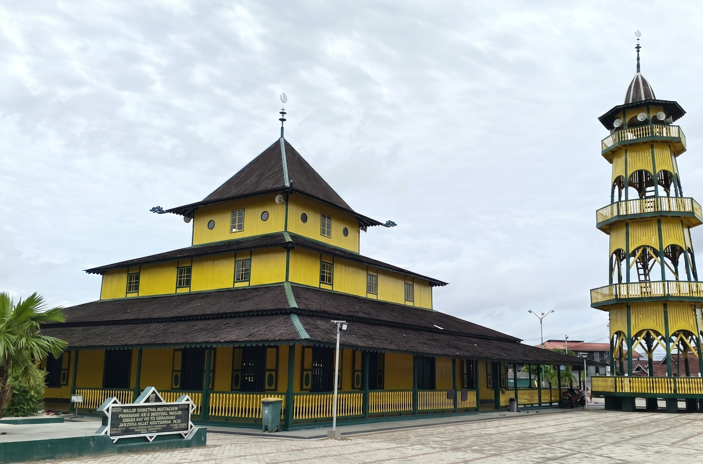

Masjid Shiratal
Mustaqiem
Samarinda
Warisan Islam tertua di Kalimantan Timur. Saksi bisu peradaban dan spiritualitas masyarakat Samarinda sejak abad ke-19.
Mengenal Lebih Dekat
Temukan fakta penting tentang salah satu warisan budaya Islam paling berharga di Kalimantan Timur.
Sejarah Singkat
Dibangun pada tahun 1881 oleh Sultan Kutai, masjid ini merupakan yang tertua di Kalimantan Timur. Didirikan dengan arsitektur Melayu tradisional yang khas dan telah melalui beberapa pemugaran.
Baca SelengkapnyaLokasi Strategis
Terletak di Jl. KH. Abul Hasan No. 1, Kelurahan Baqa, Kecamatan Samarinda Seberang, Kota Samarinda, Kalimantan Timur, tepat di tepi Sungai Mahakam.
Lihat PetaStatus Cagar Budaya
Ditetapkan sebagai Cagar Budaya Nasional dan diakui secara nasional. Dilindungi oleh UU No. 11 Tahun 2010 tentang Cagar Budaya.
Detail Status
Lebih dari Sekadar Tempat Ibadah
Masjid Shiratal Mustaqiem bukan hanya sebuah tempat beribadah — ia adalah monumen hidup yang menyimpan ribuan kisah perjuangan, peradaban, dan keimanan masyarakat Samarinda selama lebih dari satu abad.
Arsitektur uniknya memadukan tradisi Melayu dengan sentuhan Islam Nusantara, menjadikannya daya tarik wisata religi dan budaya yang tak tertandingi di Kalimantan Timur.
Program Unggulan
Berbagai kegiatan keagamaan, budaya, dan pendidikan yang diselenggarakan secara rutin.
Gagal memuat data kegiatan.
{{ item.judul }}
{{ truncate(item.deskripsi, 100) }}
Keindahan yang Terabadikan
Kumpulan foto yang menampilkan keindahan arsitektur dan suasana spiritual masjid bersejarah ini.
Gagal memuat data galeri.